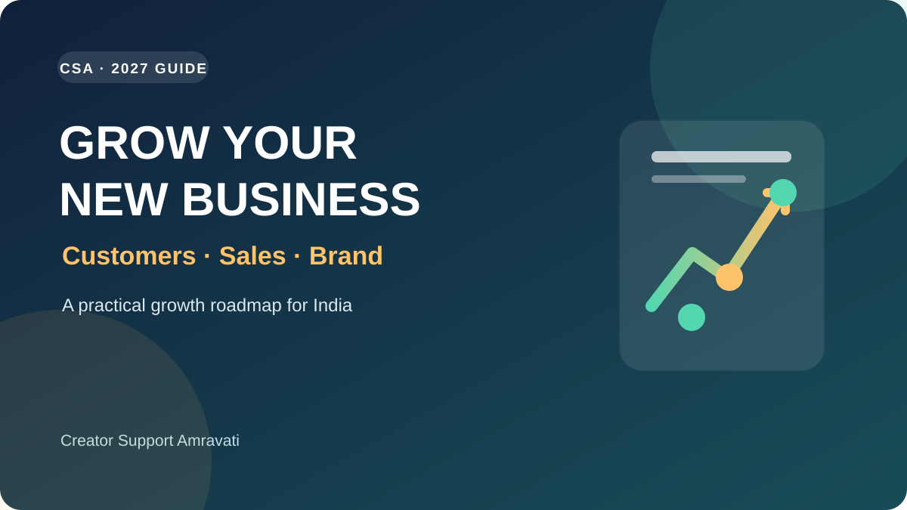

Naya Business Kaise Grow Karein? 2027 Mein Customers, Sales Aur Brand Banane Ki Complete Guide
Naya business shuru karna ek important step hai, lekin business ko stable customers aur repeat sales tak le jaana alag challenge hai. Sirf logo, Instagram page ya paid ads se sustainable growth nahi banti. Growth tab aati hai jab aap ek real customer problem solve karte hain, clear offer dete hain, trust build karte hain, sales process ko simple rakhte hain aur numbers samajhkar decisions lete hain.

- Business idea aur customer demand validate karna
- Target customer aur clear offer define karna
- Pricing, margins aur cash flow samajhna
- Brand identity aur trust build karna
- Local aur digital visibility improve karna
- Enquiries ko sales aur repeat customers mein badalna
- 90-day practical business growth plan
1. Sabse Pehle: Business Idea Nahi, Customer Problem Validate Karein
Bahut se new founders pehle shop, equipment, packaging, website ya ads par kharch kar dete hain aur baad mein customer dhoondhte hain. Is risk ko kam karne ke liye market ko samajhne se shuru karein.
- Customer interviews: 10–15 potential customers se baat karein. Unki current problem, existing solution, budget, buying frequency aur dissatisfaction samjhein. Sirf “idea achha hai?” mat poochhein—unke real buying behaviour ke baare mein poochhein.
- Competitor observation: 5–10 similar businesses dekhein. Unke prices, offers, service experience, delivery time, reviews aur customer complaints note karein.
- Small pilot: Full inventory ya large setup se pehle sample, trial service, limited batch, demo ya pre-order test karein. Payment aur feedback ko demand ka stronger signal samjhein, sirf likes ko nahi.
- Demand evidence: Kitne log enquiry karte hain, kitne quote maangte hain, kitne pay karte hain aur kitne dobara aate hain—ye track karein.
Example: Agar aap Amravati mein home bakery shuru kar rahe hain, toh pehle ek limited menu aur fixed delivery area ke saath trial orders lein. Customer feedback, ingredient cost, packaging, delivery time aur repeat orders samajhne ke baad hi menu aur capacity badhayein.
2. Ek Specific Target Customer Choose Karein
“Mere customers sab log hain” ek weak marketing strategy hai. Har product ya service ke liye ek primary customer group define karein.
Is simple template ko fill karein:
- Customer: Kaun kharidega? Age, location, profession ya business type mein kaun sa segment relevant hai?
- Need: Woh kaunsi problem solve karna chahta hai?
- Buying trigger: Kis situation mein woh purchase karega?
- Budget: Uski realistic spending range kya hai?
- Decision factor: Price, quality, convenience, speed, trust, warranty ya expertise mein se kya matter karta hai?
Primary segment clear hone ke baad adjacent customers explore kar sakte hain. Lekin shuru mein har audience ke liye alag-alag message dene se brand confusing ho sakta hai.
3. Clear Offer Banayein: Customer Ko Samajh Aana Chahiye Ki Aap Kya Bechte Hain
Customer ko 5 seconds mein samajh aana chahiye ki aap kya provide karte hain, kiske liye aur uska practical benefit kya hai.
Offer statement formula: “Hum [target customer] ko [problem/result] mein help karte hain through [product/service/approach].”
Examples:
- Mobile shop: “Daily-use smartphones, accessories aur clear after-sales guidance ek hi jagah.”
- Salon: “Appointment-based grooming aur beauty services with transparent service menu.”
- Digital service agency: “Local businesses ke liye website, social content aur measurable enquiry-focused marketing support.”
- Home food business: “Small-batch fresh snacks with pre-order scheduling and local delivery.”
Offer mein deliverables, price ya price range, delivery timeline, exclusions, payment terms aur after-sales support clearly batayein. “Best quality, lowest price, 100% guaranteed growth” jaise vague ya unsupported claims avoid karein.
4. Pricing Aur Profit Samjhe Bina Sales Scale Mat Karein
Revenue aur profit alag cheezein hain. Agar har order par aapka variable cost aur fulfilment cost selling price ke bahut kareeb hai, toh zyada orders lene par bhi cash pressure badh sakta hai.
| Cost / metric | Example (illustrative) | Kya include karein |
|---|---|---|
| Selling price | ₹1,000 | Customer se li gayi amount, applicable taxes ko separately account karein |
| Direct variable cost | ₹450 | Material, packaging, payment fees, per-order labour / delivery |
| Contribution before fixed costs | ₹550 | Selling price minus direct variable costs |
| Monthly fixed costs | ₹15,000 | Rent, internet, software, base salaries, utilities, etc. |
Ye sirf calculation samjhane ke liye hypothetical example hai, industry benchmark nahi. Actual pricing mein wastage, returns, discounts, taxes, owner compensation, financing cost aur seasonal demand bhi consider karein.
- Har product ya service ka cost sheet banayein.
- Discount dene se pehle contribution par uska impact calculate karein.
- Credit par sale karte waqt payment date aur collection follow-up define karein.
- Personal aur business transactions ko alag record karein.
- Weekly cash-in, cash-out aur pending receivables review karein.
5. Brand Identity Aur Customer Trust Build Karein
Brand sirf logo aur colour palette nahi hai. Brand ka matlab hai customer ko har interaction mein ek consistent experience milna.
- Consistent identity: Business name, logo, colours, signboard, invoice, packaging aur social profiles par same identity use karein.
- Real photos: Products, workspace, team, process aur completed work ki genuine images dikhayein. Stock photo ko apna actual work batakar use na karein.
- Clear policies: Pricing, delivery, returns, cancellations, warranty aur complaint process ko written form mein rakhein—jo aap actually honour kar sakte hain.
- Proof: Customer reviews ya testimonials sirf permission ke saath share karein. Case studies mein result ka context aur limitations batayein.
- Professional response: Calls, WhatsApp, comments aur email ka response process set karein.
6. Local Business Hai Toh Google Business Profile Zaroor Dekhein
Agar customers aapki shop, office ya service area ke basis par aapko dhoondhte hain, toh Google Business Profile local discovery ka useful channel ho sakta hai.
- Business ka eligible profile create ya claim karein aur ownership verify karein.
- Real business name, correct category, phone, address ya service area, opening hours aur website add karein.
- Products, services, menu, photos aur updates ko relevant aur current rakhein.
- Customers se honest reviews maangein; fake reviews, incentives ke badle positive rating ya review gating avoid karein.
- Reviews ka polite aur specific response dein. Negative feedback ko resolve karne ka chance samjhein.
- Profile par calls, direction requests, website visits aur actual enquiries ka trend review karein.
Google ke mutabik local results primarily relevance, distance aur prominence par based hote hain. Complete and accurate information, verification, photos aur reviews help kar sakte hain, lekin top ranking ki guarantee nahi hoti. Google Business Profile: local ranking improve karne ke official tips.
7. Digital Presence: WhatsApp, Instagram Aur Website Ko Ek Journey Banayein
Har platform par sirf account banana enough nahi. Customer ko discovery se enquiry aur purchase tak clear path milna chahiye.
WhatsApp Business — enquiries aur customer support
- Business profile, timings, address, catalogue aur contact details accurate rakhein.
- Greeting aur away messages ko helpful banayein; automated reply ko human support ka replacement na samjhein.
- Quick replies se common questions—price, availability, delivery, booking—ka consistent jawab dein.
- Customer consent ke bina bulk promotional messages na bhejein. Opt-out requests respect karein.
- Orders aur enquiries ko labels ya simple CRM sheet se track karein.
Instagram aur Facebook — discovery aur trust
- Bio mein clear business category, location / service area aur enquiry action rakhein.
- Product demonstrations, FAQs, customer education, behind-the-scenes aur real work examples publish karein.
- Reels discovery ke liye, carousels detailed education ke liye aur Stories updates / conversations ke liye use kar sakte hain.
- Har post mein relevant next step dein—DM, call, booking, catalogue ya website. Har post ko hard-sell na banayein.
- Comments aur DMs ko sales pipeline mein record karein, sirf follower count mat dekhein.
Website — aapka owned information hub
Business ke size aur customer journey ke hisaab se ek simple, mobile-friendly website banayein jisme services/products, prices ya quote process, location, contact details, policies, FAQs aur genuine work samples hon. Enquiry form ya booking process ko test karein. Website ka goal sirf “online presence” nahi, customer ke questions ka clear answer aur next action dena hai.
8. Offline Marketing Aur Local Partnerships Ko Ignore Na Karein
Har business ka customer social media par hi purchase nahi karta. Local visibility aur face-to-face trust ab bhi kai categories mein important hain.
- Signage: Shop board readable ho aur contact details current hon.
- Referral system: Existing happy customers ko business recommend karne ka easy way dein. Incentive ho toh terms transparent aur lawful rakhein.
- Local partnerships: Complementary businesses, societies, schools, events ya professionals ke saath relevant cross-promotion karein.
- Sampling / demo: Product type ke hisaab se trial, demonstration, consultation ya open house arrange karein.
- Printed material: Visiting cards, flyers aur brochures par QR code ya short link ko actual working enquiry destination se connect karein.
- Community presence: Local events aur customer education sessions mein participate karein; sirf promotional pitch dene ke bajay useful information share karein.
9. Enquiry Ko Sale Mein Convert Karne Ka Simple System
Leads aane ke baad follow-up aur customer handling weak ho toh marketing ka paisa waste ho sakta hai. Ek simple sales pipeline banayein:
- New enquiry: Customer ka naam, requirement, source aur date record karein.
- Understand need: Budget, timeline, quantity, location aur desired outcome samjhein.
- Send a clear quote: Deliverables, price, timeline, terms aur quote validity mention karein.
- Follow up: Customer ki permission aur reasonable interval ke saath polite follow-up karein. Repeated unwanted messages avoid karein.
- Close or learn: Sale, lost reason, competitor choice ya delayed decision record karein.
- After-sales: Delivery confirmation, support, feedback aur suitable repeat purchase reminder set karein.
Ek spreadsheet mein enquiry date, customer source, quoted value, status, next follow-up date aur outcome rakhna shuru kar sakte hain. Volume badhne par CRM consider karein.
10. First 90 Days: New Business Growth Roadmap
| Period | Main focus | Actions | Measure |
|---|---|---|---|
| Days 1–30 Validate | Customer, offer, economics | Customer interviews, competitor review, pilot offer, cost sheet, clear contact path | Qualified enquiries, paid trials, feedback, contribution per sale |
| Days 31–60 Build visibility | Discovery and trust | Google profile if eligible, WhatsApp setup, social content, local partnerships, review process | Source-wise enquiries, profile actions, response time, conversion |
| Days 61–90 Improve | Repeatable sales and retention | Follow-up system, referral requests, repeat offer, customer feedback, small ad tests if economics allow | Repeat purchase, customer acquisition cost, gross contribution, cash collection |
90 din ka plan ek operating framework hai, guaranteed revenue ya customer target nahi. Business cycle, seasonality aur product delivery time ke hisaab se phases adjust karein.
11. Paid Ads Kab Start Karein?
Ads tab test karein jab aapko pata ho ki kaunsa customer segment buy karta hai, offer kya hai, enquiry ka jawab kaun dega aur sale ke baad delivery kaise hogi. Agar customer experience ya pricing abhi clear nahi, toh ads zyada enquiries laakar problem ko bada kar sakte hain.
- Ek campaign mein ek audience, one clear offer aur one conversion action test karein.
- Creative mein real product/service, location, price context aur next step clear rakhein.
- Campaign spend ke saath creative production, discount, delivery aur sales handling costs bhi track karein.
- Clicks aur reach ko final success na samjhein—qualified enquiries, paid orders, contribution aur collected revenue dekhein.
- Small controlled tests se shuru karein; evidence ke bina budget sharply increase na karein.
12. Business Registration, Records Aur Compliance
Business ka legal structure, tax registrations, local permissions aur sector licences aapki activity, turnover, location aur business model par depend karte hain. Sole proprietorship, partnership, LLP aur company ke obligations ek jaise nahi hote. Applicable requirements ko official sources ya qualified professional se verify karein.
- Udyam / MSME: Eligible micro, small aur medium enterprises official Udyam portal par registration details check kar sakte hain. Government portal ke mutabik registration free hai; private agents ko “mandatory fee” dene se pehle official portal verify karein. Official Udyam Registration Portal.
- Startup India: Eligible startups ke liye ideation, validation, early traction aur scaling stage ke resources, learning, mentorship aur schemes explore karne ke liye Startup India portal dekhein.
- GST aur local licences: GST registration, Shops and Establishments, FSSAI, trade licence ya professional registrations business activity aur applicable thresholds / state rules par depend karte hain. Har business ko same licence ki zaroorat nahi hoti.
- Records: Invoices, receipts, expenses, bank transactions, inventory, payroll aur customer contracts ko organized rakhein.
Government schemes ya registration ko growth shortcut na samjhein. Eligibility, application window, documentation aur current rules official portal par check karein. Startup India resources bhi business stage ke hisaab se validation, early traction aur scaling ko alag support areas ke roop mein present karte hain.
13. Har Week Ye 8 Business Numbers Review Karein
- Qualified enquiries: Kitne relevant potential customers aaye?
- Enquiry source: Google, referral, Instagram, walk-in, ads ya partnership?
- Conversion rate: Kitni enquiries paid sales bani? Denominator consistently define karein.
- Average order value: Average sale kitni hai?
- Gross contribution: Direct variable cost ke baad kitna bachta hai?
- Repeat purchase / retention: Kitne customers dobara aaye?
- Customer acquisition cost: New customer acquire karne ka attributable cost kitna hai? Small sample mein is metric ko cautiously interpret karein.
- Cash flow: Cash received, payable, receivable aur upcoming obligations kya hain?
Ek dashboard mein sab metrics rakhna useful hai, lekin data ko action se connect karein. Agar enquiries hain par conversion low hai, sales conversation aur offer dekhein. Agar sales hain par cash nahi aa raha, collection terms review karein. Agar customers repeat nahi karte, product experience aur follow-up investigate karein.

14. Naye Business Ki 7 Common Growth Mistakes
- Har customer ko target karna: Positioning vague ho jaati hai. Ek primary segment se shuru karein.
- Demand test kiye bina heavy investment: Pilot, pre-order ya limited service test se learn karein.
- Competitor se sirf price mein compete karna: Convenience, expertise, service, speed ya reliability jaise differentiators identify karein.
- Followers ko sales samajhna: Reach useful hai, lekin paid customers, repeat orders aur margins bhi track karein.
- Har platform par ek saath hona: Pehle 1–2 relevant channels ko achhe se manage karein.
- Cash flow ignore karna: Profit on paper aur bank balance alag ho sakte hain. Collections aur payables review karein.
- Customer feedback ko ignore karna: Complaints aur lost sales ke reasons product aur service improve karne ke clues hain.
Frequently Asked Questions
1. Naye business ko grow karne mein kitna samay lagta hai?
Iska koi fixed timeline nahi hai. Product demand, customer experience, pricing, competition, cash flow aur execution ke hisaab se progress badalti hai. Pehle 30–90 din ko learning aur validation period samjhein, guaranteed growth deadline nahi.
2. Kya naye business ko shuru se website banani chahiye?
Har business ko day one par complex website ki zaroorat nahi hoti. Lekin accurate contact details, clear service/product information, trust signals aur enquiry ya purchase ka simple route hona chahiye. Business model aur customer journey ke hisaab se website, marketplace ya verified business profile chunein.
3. Local business ke liye sabse pehle marketing kahan karein?
Apne target customer ke buying behaviour se shuru karein. Local store ya service ke liye Google Business Profile, referrals, WhatsApp Business, local partnerships aur useful social content practical starting points ho sakte hain.
4. Naye business ko kitna advertising budget rakhna chahiye?
Koi universal percentage ya fixed amount sahi nahi hai. Pehle unit economics, gross margin, average order value aur customer acquisition cost samjhein. Chhote test budget se campaign validate karein aur profitable, repeatable results milne par hi scale karein.
5. Kya Udyam Registration har business ke liye compulsory hai?
Udyam Registration MSME classification aur related benefits ke liye ek official registration route hai, lekin har business ke liye har situation mein ek jaisi legal requirement nahi. Eligibility, activity aur applicable rules official portal par check karein; GST, local licences aur entity registrations alag requirements ho sakti hain.
Useful Business & CSA Resources
- Creator Support Amravati Services — website development, branding, graphic design, social media management, video production aur digital marketing support.
- CSA Portfolio — creative and digital project examples.
- Contact CSA — discuss your business website, content or digital visibility requirements.
- Startup India Resources — entrepreneur learning, market research and templates.
Helpful Official References
- Google Business Profile Help: Tips to improve local ranking
- Ministry of MSME: Official Udyam Registration Portal
- Startup India: Official portal and startup resources
About the Author
Rajkumar Chavhan is a digital marketing specialist and founder of Creator Support Amravati (CSA). He works with creators, local businesses and brands on digital marketing, websites, graphic design, social media management, video production and online visibility.
- Website: creatorsupportamravati.in
- Studio & Office: Vyanktesh Complex, Shop No. F-101, Mahendra Colony, Naredi Nagar Road, Amravati, Maharashtra 444604
Editorial Disclosure: Yeh article educational information hai, legal, tax, accounting ya financial advice nahi. Registrations, licences, tax applicability aur government schemes business-specific hote hain; current rules official sources aur qualified professionals se verify karein. Business growth, revenue ya customer acquisition ka koi result guaranteed nahi hai. Digital presence, content ya marketing support ke liye Creator Support Amravati se sampark karein.